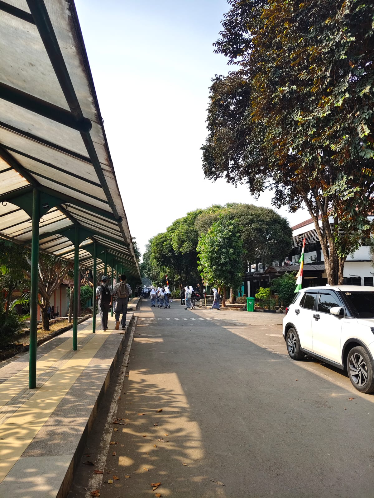
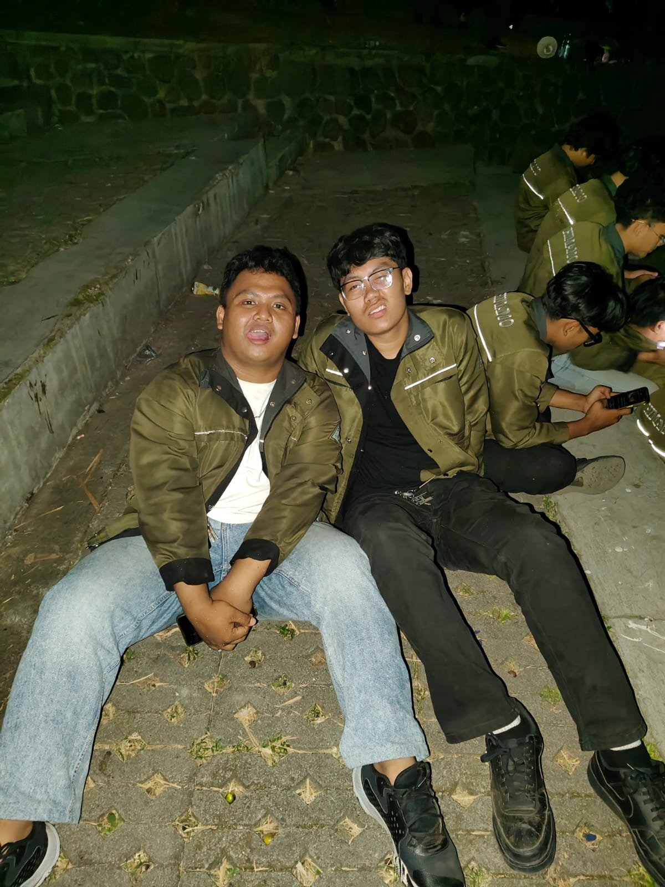
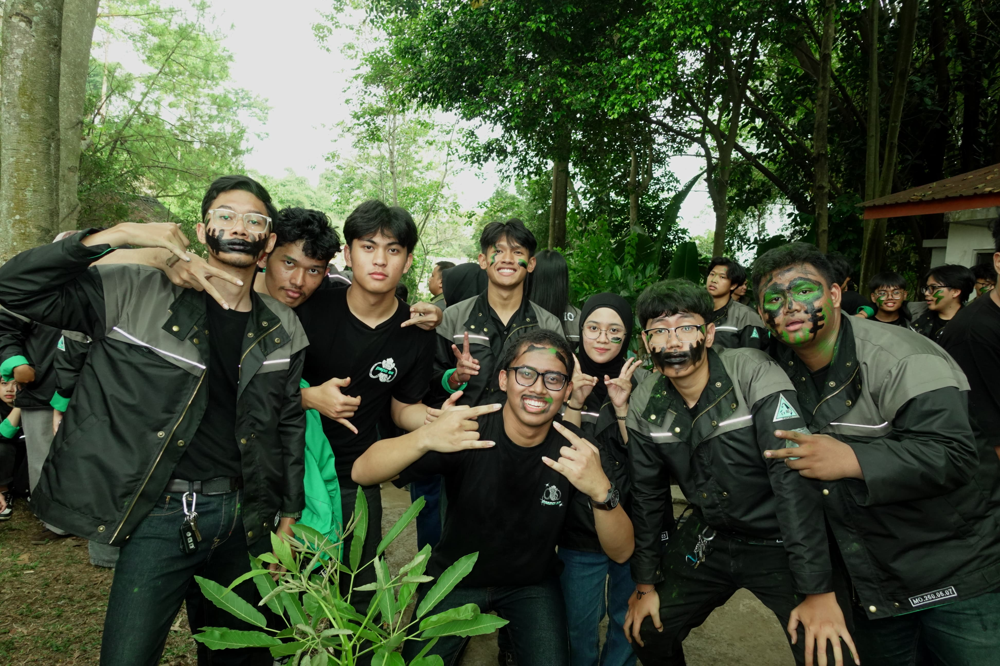
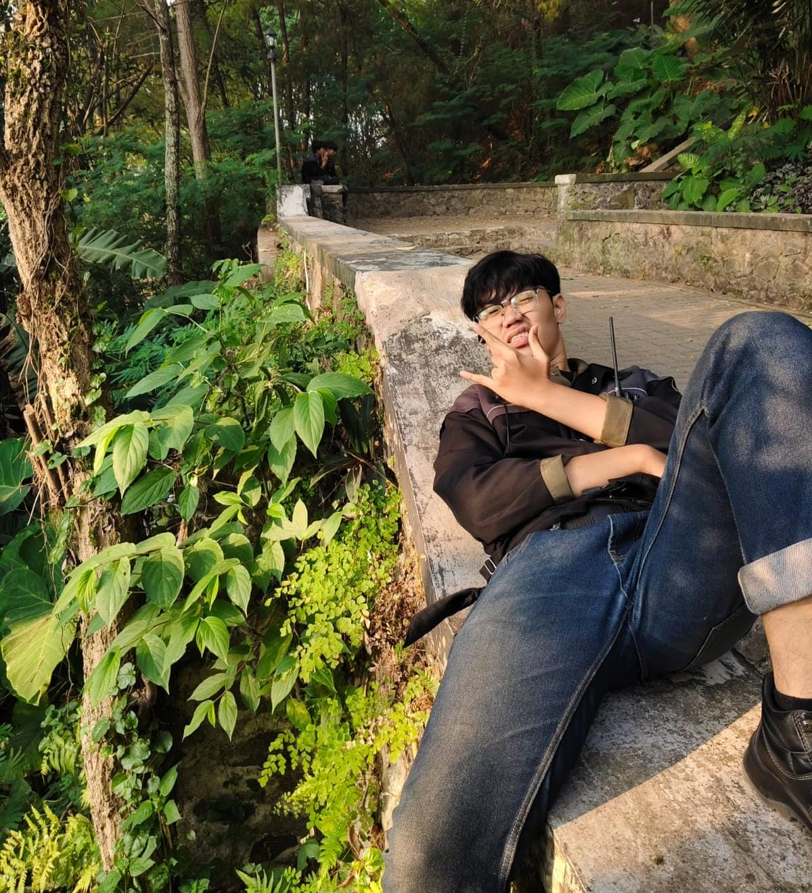
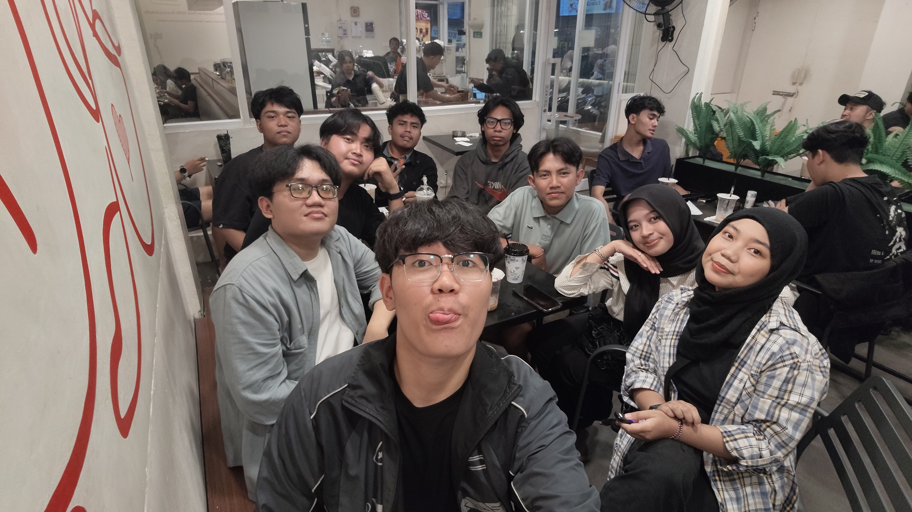
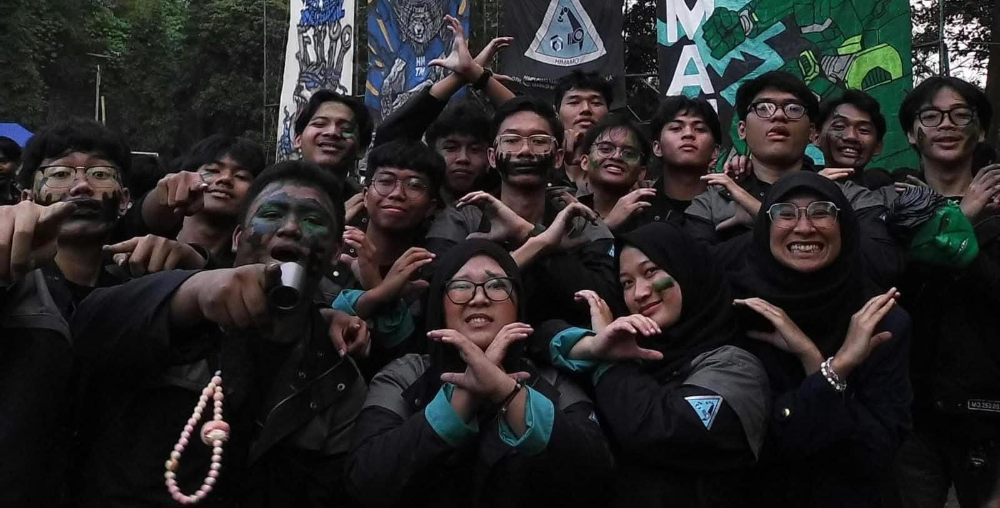

TENTANG SAYA
Saya adalah mahasiswa di Politeknik Manufaktur Bandung, program studi Teknologi Rekayasa Informatika Industri.
Saya berfokus dalam eksplorasi antarmuka web, teknologi front-end, serta pengelolaan repository dan cloud development environments secara efisien.
KEAHLIAN & TOOLS
Cisco Packet Tracer
Kemampuan untuk merancang, mengonfigurasi, dan menguji simulasi jaringan komputer secara virtual sebelum diterapkan pada perangkat keras asli..
MIKROTIK
Kemampuan untuk mengonfigurasi, mengelola, dan mengamankan perangkat keras jaringan MikroTik guna mengatur lalu lintas internet di sebuah jaringan lokal.
CRIMPING LAN
Kemampuan teknis dalam membuat, merakit, dan menguji kabel jaringan secara manual sesuai dengan standar industri untuk memastikan konektivitas fisik antarperangkat berjalan stabil tanpa gangguan (loss).
RIWAYAT PENDIDIKAN

Sekolah Dasar (SD)
SDN Cibuntu 01
LulusSekolah Menengah Pertama (SMP)
SMPN 2 Tambun Selatan
Lulus
Sekolah Menengah Kejuruan (SMK)
SMKN 1 Cikarang Barat
Lulus - 2025Politeknik Manufaktur Bandung
Teknologi Rekayasa Informatika Industri
2025 – SEKARANGPENGALAMAN
PRAKTEK KERJA LAPANGAN (PKL)
2023 - 2024IT - Support [PT. Indonesia Toppan Printing]
Melakukan observasi, pemeliharaan sistem informasi internal, serta membantu pengujian fungsionalitas fitur dalam proyek pengembangan instansi.
UNIT KEGIATAN MAHASISWA (UKM)
2025 – SEKARANGAnggota Aktif - [ATI - Amateur Telecommunition Information]
Mendukung kegiatan operasional organisasi, berpartisipasi dalam event kampus, dan mengasah soft-skills kolaborasi tim secara profesional.
HIMPUNAN MAHASISWA (HIMA)
2025 – SEKARANGAnggota - Pengabdian Masyarakat [HIMAMO]
Sebagai anggota di divisi pengabdian masyarakat (Pengmas/Sosmas), tugas Anda fokus pada eksekusi teknis, survei lapangan, dan menjaga hubungan langsung dengan masyarakat. Anggota adalah penggerak utama agar program kerja yang dirancang oleh kepala divisi dapat berjalan sukses..
SYSTEM_GALLERY.LOG





CONTACT ME
Silakan hubungi saya melalui saluran komunikasi dan media sosial di bawah ini: